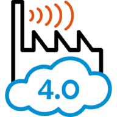
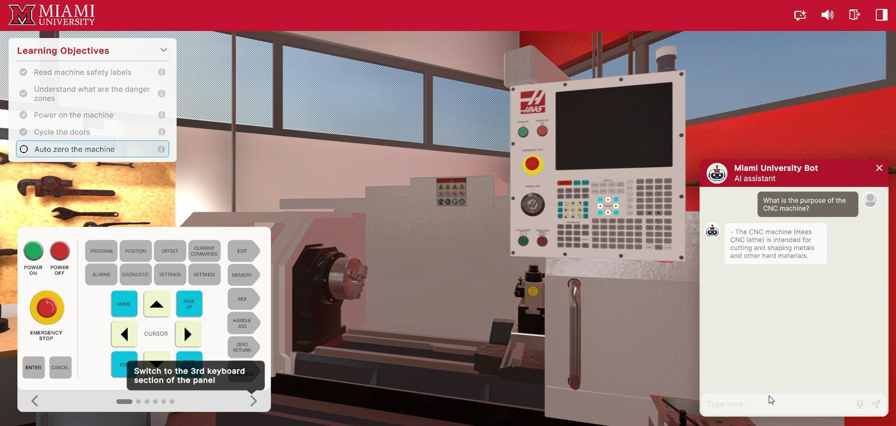
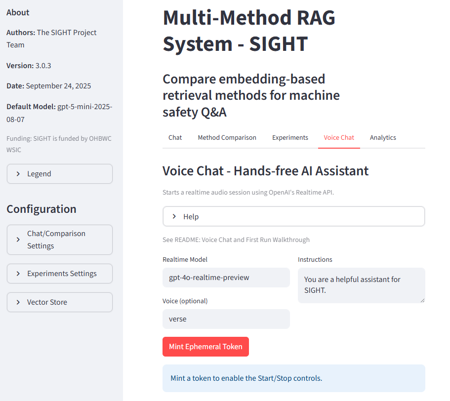
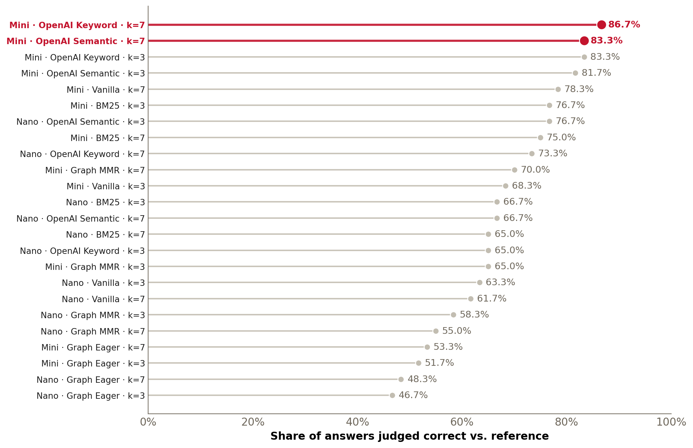
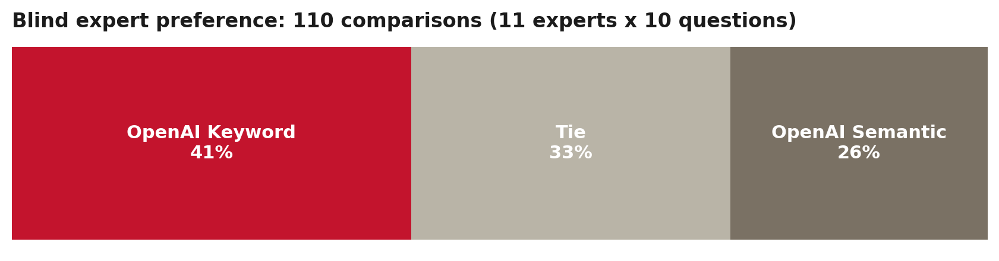
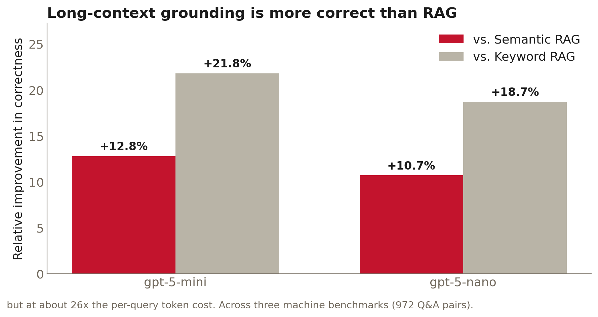

A Multimodal Manufacturing Safety Chatbot
Knowledge Base Design, Benchmark Development, and Evaluation of Multiple RAG Approaches
NAMRC 54 · Track 1: Manufacturing Systems III • Presented by Fadel Megahed & Ibrahim Yousif
June 15, 2026
The Cost of Workplace Injuries in Manufacturing
The U.S. manufacturing industry loses nearly $7.47 billion a year to serious, nonfatal workplace injuries.1 It employs about 12.5 million workers.2
💥$0.83BStruck by object or equipment (11.2%)
🗜️$0.65BCaught in or compressed by equipment (8.8%)
⚠️~$1.48BFrom contact with equipment alone
- Manufacturing is among the most hazardous occupational sectors.
- Being struck by equipment is the 3rd most common cause; being caught in or compressed by equipment is the 4th.1
References:
1. Liberty Mutual, 2025 Workplace Safety Index: Manufacturing (Report Summary).
2. U.S. manufacturing employment, ~12.5M average in 2025 (FRED: MANEMP).
Ohio’s Manufacturing Industry: Safety Issues
From 2007-2017, the OHBWC insured about two-thirds of Ohio’s workers.3 From the analysis of private-employer claims over that period:3
In FY 17 alone, the OHBWC paid $1.635 B in total benefits (per p. 49).
A total of 31,703 lost-time cases were caused by contact with objects and equipment.
In manufacturing, contact with objects/equipment represented:
- 34.85% of the sector’s lost-time (LT) claims.
- 57.11% of the sector’s total (LT + medical-only) claims.
Notes:
- The OHBWC (established in 1912) is the largest state-run WC system in the US.
- Lost-time (LT) claims = 8 or more days away from work (\(\ge 8\) DAW); Medical-only (MO) claims (medical care only and/or \(\le 7\) DAW).
Reference:
3. J Safety Res. 2021;79:148-167 (publicly available).
Safety Issues Root-Causes
- Standardized machine guarding checklists to identify hazards and system deficiencies, especially in metal-working and similar industries.3
- Temporary workers have higher contact injury rates due to:4 (a) less safety training; and (b) shorter job tenure.
- Recognized interventions to reduce such injuries include:
- Machine guarding and safety saws5
- PPE: safety glasses, gloves, awareness campaigns6,7
- NIOSH guidance: Hazardous Energy Control Resource Guide8
References:
3. J Safety Res. 2021;79:148-167 (link).
4. Am J Ind Med. 2017;60(10):841-851 (link).
5. Am J Ind Med. 2014;57(12):1398-1412 (link).
6. Am J Ind Med. 2000;18(4S):27-32 (link).
7. Orthopedics. 1995;18(11):1067-1071 (link).
8. NIOSH, Hazardous Energy Control: Lockout and Other Means, 2025 (NIOSH).
Traditional Safety Training Is Static
Why it falls short
- Delivered once at onboarding and at fixed intervals; it does not adapt to evolving hazards or differing worker experience.
- When an operator needs machine-specific guidance, a static manual is hard to search in the moment a hazard is present.
Evidence for immersive training
- A meta-analysis of VR, AR, and mixed-reality training finds immersive methods are at least as effective as traditional training, with gains in engagement and retention.9
- This motivates adaptive, immersive delivery for hazard recognition.
Reference:
9. Kaplan et al., The Effects of Virtual Reality, Augmented Reality, and Mixed Reality as Training Enhancement Methods: A Meta-Analysis, Human Factors 2021;63(4):706-726 (doi).
Our Industry Partners
Engineered Profiles Industry leader in plastic extrusion, serving Agriculture, Building Products, Energy, HVAC & Filtration, Refrigeration, Retail & Commercial Fixtures, and more
Industrious Group North American holding company delivering maintenance, repair, and modernization of heavy machinery and equipment across critical industries
Yamaha Motor Mfg. (YMMC) Builds and assembles WaveRunners, Side-by-Sides, ATVs, and Golf Cars
Technology and development partners
MeetKai AI and web-based VR development

MaxByte AR, IIoT, and digital transformationA Web-Based VR Training Environment
Together, we built a web-based VR training environment.
Try it live: mou-virtual-demo.mkms.io
The Chatbot, Embedded in the VR Platform
Inside the environment, workers ask questions in plain language and get grounded, document-backed guidance with cited sources, by text, or voice.

Why Embed an AI Safety Chatbot?
The same assistant is available two ways, so it meets workers in the mode most convenient to their environment.
💬Standalone web chatbotA browser chatbot for text, image, and voice questions. sight.fsb.miamioh.edu
🔌Programmatic APIA public API to embed safety Q&A into other tools and platforms. API documentation
This talk focuses on how we built and benchmarked that assistant.
Building and Benchmarking the Safety Chatbot
Three Design Requirements
A next-generation safety-training assistant must satisfy three requirements,10 which are in tension with one another.
🎯AccuracyTechnically correct and operationally safe guidance.
⏱️LatencyTimely, responsive answers under changing conditions.
💲CostAffordable and scalable for manufacturers of all sizes.
Our artifact: an open-source, Retrieval-Augmented Generation (RAG) chatbot grounded in regulatory documents (OSHA, NIOSH) and OEM manuals.
Reference:
10. Peffers et al., A Design Science Research Methodology for Information Systems Research, J. Manag. Inf. Syst. 2007;24(3):45-77 (doi).
The Six-Phase Framework
Phase 1Source Curation and Corpus
- Collect OSHA, NIOSH, OEM docs
- OCR and clean text
- Segment and standardize files
Phase 2Knowledge Base and Indexing
- Cloud keyword and semantic
- Local BM25 index
- Graph indices and a router
Phase 3Multimodal Chatbot
- Text, image, and speech
- Grounded citations
- Session analytics
Phase 4Benchmark Q&A Dataset
- Draft questions from manuals
- Expert-validated gold answers
- Three target machines
Phase 5Automated Evaluation
- 24-pipeline factorial
- Accuracy, latency, cost
- 1,440 responses per metric
Phase 6Human Evaluation
- Blind side-by-side review
- 11 industry and safety experts
- Select the deployed pipeline
Phase 1: Source Curation and Corpus
We curated four categories of authoritative documents:
⚖️ OSHA Regulations (29 CFR 1910) 1910.147 (Control of Hazardous Energy: Lockout/Tagout)
1910.178 (Powered Industrial Trucks)
1910.211-.219 (Guarding to Mechanical Power Transmission)
📘 OSHA Technical Documents 3120 (Control of Hazardous Energy, Lockout/Tagout)
3170 (Safeguarding Equipment and Protecting from Amputations)
Technical Manual (Sec. IV, Ch. 4: Industrial Robot Safety)
⚠️ NIOSH Safety Alerts and Guidance 2011-156 (Lockout/Tagout to Prevent Injury during Maintenance)
85-103 (Preventing the Injury of Workers by Robots)
🛠️ OEM Manuals Bridgeport Milling Machine (M-508, 2018)
Haas Lathe Operator’s Manual (96-8910, Rev. J)
UR5e Universal Robots User Manual
Phase 2: Knowledge Base and Indexing
We built six retrieval mechanisms behind a unified router, so strategies can be swapped for a fair, controlled comparison.
1 · OpenAI Keyword
2 · OpenAI Semantic
3 · BM25
4 · Graph Eager
5 · Graph MMR
6 · Vanilla
grounded answer
Questions may use precise regulatory terms or broad hazard descriptions, so the mix of lexical, semantic, and graph methods covers both.
Phase 3: The Multimodal Chatbot
A deployed Streamlit application (OpenAI Responses and Realtime APIs):
- Text, image, and speech input.
- Answers are grounded with transparent citations.
- Logs session analytics for auditability and trust.
Live: sight.fsb.miamioh.edu

Phase 4: An Expert-Validated Benchmark
A key contribution: expert-validated Q&A across three generations of machines; evaluation focuses on the UR5e cobot.
🛠️42Bridgeport manual mill
⚙️51Haas TL-1 CNC lathe
🤖60UR5e cobot · 23 easy / 30 moderate / 7 challenging
Q (easy): What is a pinch hazard in robot operation?
Gold answer: A pinch hazard occurs when body parts can be caught between moving robot parts or surfaces.
- Validated by industry safety experts (Engineered Profiles, Yamaha, MeetKai) with academic researchers.
- Openly available on GitHub.
Phase 5: Experimental Design
A full-factorial experiment isolates what actually drives performance.
Each of the 24 pipelines answers all 60 benchmark questions → 1,440 responses per metric.
- Metrics: accuracy (LLM-as-judge vs gold), latency (end-to-end), cost (token cost).
- Controlled: temperature 0, max 5,000 output tokens, low reasoning effort.
This is the automated screening stage (Phase 5). The most promising pipelines then advance to Phase 6: blind human expert evaluation.
Phase 5 Results: Accuracy

All 24 pipelines. Retrieval method and model size drive accuracy; depth (top-k) does not.
The two most accurate pipelines (gpt-5-mini with OpenAI Keyword and OpenAI Semantic, top-k = 7, shown in red) are carried to blind expert review.
Phase 5 Results: Latency and Cost

The same two highlighted pipelines are mid-pack on latency and the most expensive (the price of their accuracy). Cost gaps are real but modest at deployment scale (a few dollars/month under ~10,000 queries); ~10s latency suits informational guidance.
Phase 6: The Human Evaluation
Industry experts in the loop again: 11 manufacturing and occupational-safety experts (7 external to the team) ran a blind, side-by-side comparison of the two best pipelines.
Phase 6 Results: Human Evaluation

86.66%Accuracy
~$0.005Cost per query
~10sEnd-to-end latency
Deployed: gpt-5-mini with OpenAI Keyword at top-k = 7, the best trade-off for a safety-critical setting.
Discussion and Implications
Contributions and Key Takeaway
- An open-source, domain-grounded multimodal safety chatbot (text, image, speech).
- An expert-validated, openly available benchmark spanning three generations of machines, built with industry experts and reusable by the community (on GitHub).
- A systematic, reusable methodology (six phases) linking knowledge-base design to end-to-end RAG performance.
Takeaway: no single pipeline dominates across accuracy, latency, and cost; RAG configuration is inherently multi-objective.
Extension: The Token Tax of Epistemic Accuracy

Loading the entire corpus in context (long-context prompting) is more correct than retrieving a few passages, but at about 26x the per-query token cost.11 This motivates Pareto-based optimization across accuracy, latency, and cost for a facility’s budget.
Reference:
11. Companion study, The Token Tax of Epistemic Accuracy: Comparing RAG and Long-Context Architectures (to be submitted on arXiv this week).
Thank You
Thank You
A Multimodal Manufacturing Safety Chatbot, Singh et al., NAMRC 54
- Try the chatbot: sight.fsb.miamioh.edu
- API: documentation
- Code and benchmark: github.com/fmegahed/safety_rag_evaluation
- Paper and slides: scan the QR codes
- Contact: fmegahed@miamioh.edu
Funded by the Ohio Bureau of Workers’ Compensation, Worker Safety Innovation Center (Grant #WSIC26-250206-009).

Project funded by the Ohio BWC through their Worker Safety Innovation Center